Chapter 5 常微分方程的初值问题 | Initial-Value Problems for Ordinary Differential Equations
约 3569 个字 26 张图片 预计阅读时间 18 分钟
用数值方法来求解常微分方程的初值问题，就是找到 \(w_0,w_1,\cdots,w_N\)，使得 \(w_i\approx y(t_i)\)。
5.1 初值问题的基本理论 | The Elementary Theory of Initial-Value Problems
Lipschitz 条件 | Lipschitz Condition
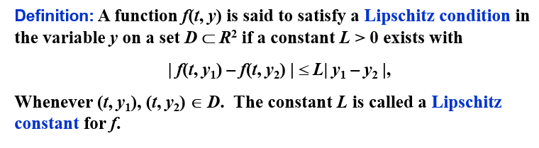
实际上，就是关于 \(y\) 的偏导数（如果可导）的上界
在 Lipschitz 条件下，初值问题的解是唯一的：
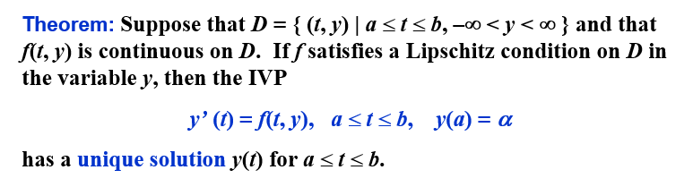
良态问题 | Well-Posed Problems
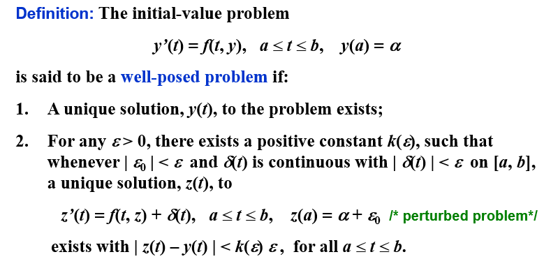
\(z(t)\) 那行的式子是原式的摄动问题（perturbed problem），即在原式的基础上加上一个扰动项（假定微分方程可能有误差\(\delta\)，或者初值有误差\(\epsilon\)）
在 Lipschitz 条件下，初值问题是良态的：
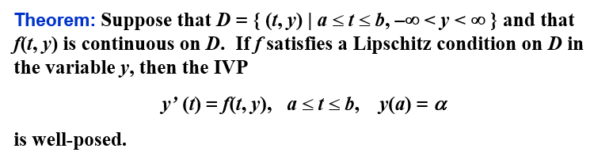
5.2 Euler 法 | Euler's Method
Euler 法的目的是获得如下形式的近似解：
\[
\begin{cases}\frac{dy}{dt}=f\left(t,y\right)\quad t\in[a,b]\\y(a)=\alpha&\end{cases}
\]
得到的是一系列点的近似值。
Euler 法的思想是，用 \(f(t,y)\) 在 \((t_i,y_i)\) 处的线性近似值来代替 \(f(t,y)\)，即：
\[w_{i+1}=w_i+hf(t_i,w_i)\]
我们称其为差分方程（difference equation）
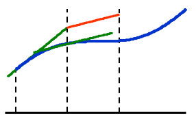
误差界
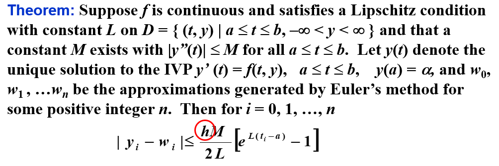
如果考虑每次计算中的舍入误差，则有
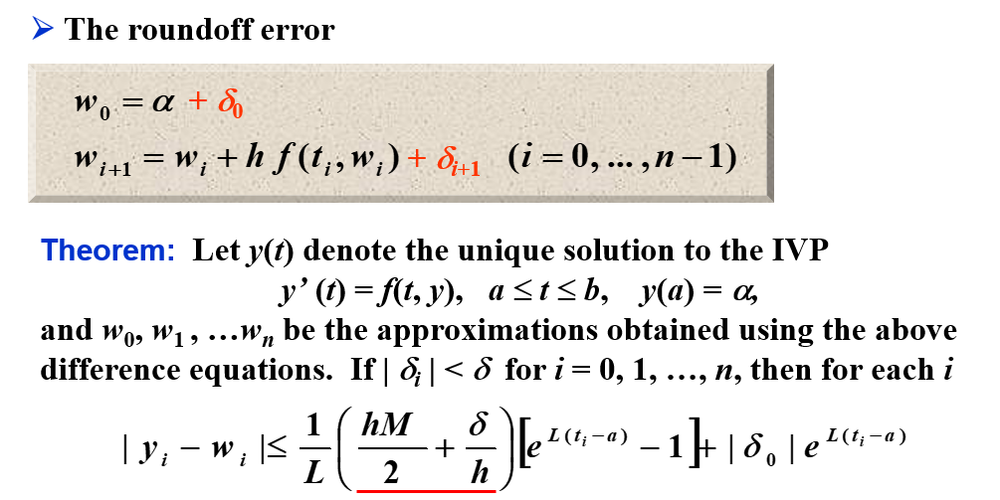
此时，往往有 \(h>\sqrt{2\delta /M}\)（\(\delta\) 通常很小），所以随着 \(h\) 的减小，误差会越来越小。（打勾函数的右沿）
其他 Euler 法
隐式欧拉法 | Implicit Euler Method
隐式欧拉法(implicit Euler method)，又称后退欧拉法，是按照隐式公式进行数值求解的方法。隐式公式不能直接求解，一般需要用欧拉显式公式得到初值，然后用欧拉隐式公式进行迭代求解。因此，隐式公式比显式公式计算复杂，但稳定性好。
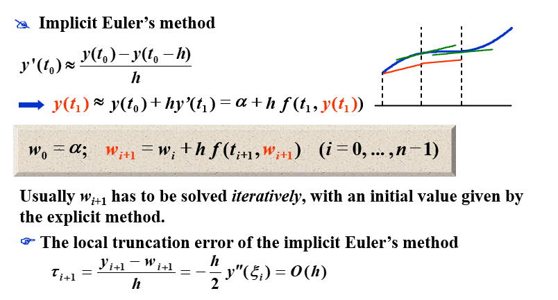
梯形法 | Trapezoidal Method
梯形法(trapezoidal method)是一种求解常微分方程初值问题的数值方法。它是欧拉法和隐式欧拉法的结合，是一种二阶方法。梯形法的基本思想是用 \(f(t_i,y_i)\) 和 \(f(t_{i+1},y_{i+1})\) 的平均值来代替 \(f(t,y)\)，即：
\[w_{i+1}=w_i+\frac{h}{2}(f(t_i,w_i)+f(t_{i+1},w_{i+1}))\]
Note: The local truncation error is indeed \(O(h^2)\). However an implicit equation has to be solved iteratively.
双步法 | Double-step Method
双步法相较于之前的方法，需要两个初始值，即 \(w_0\) 和 \(w_1\)，然后用这两个初始值来计算 \(w_2\)，再用 \(w_1\) 和 \(w_2\) 来计算 \(w_3\)，以此类推。
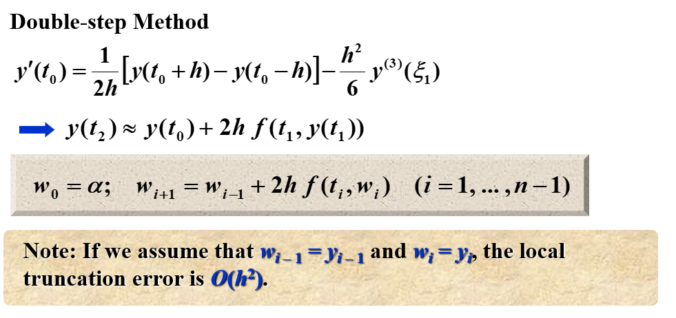
对比
5.3 高阶 Taylor 法 | Higher-Order Taylor Methods
局部截断误差
局部截断误差只考虑一步的误差，即假设前面没有误差：
\[w_0=\alpha\]
\[w_{i+1}=w_i+h\phi(t_i,w_i),\quad i=0,1,\cdots,N-1\]
有局部截断误差
\[ \tau_{i+1}(h)=\frac{y_{i+1}-(y_i+h\phi(t_i,y_i))}{h}=\frac{y_{i+1}-y_i}{h}-\phi(t_i,y_i)\]
Euler 法实际上就是高阶 Taylor 法的一阶近似。
高阶 Taylor 法
\[y_{i+1}=y_i+hf(t_i,y_i)+\frac{h^2}2f^{\prime}(t_i,y_i)+\cdots+\frac{h^n}{n!}f^{(n-1)}(t_i,y_i)+\frac{h^{n+1}}{(n+1)!}f^{(n)}(\xi_i,y(\xi_i))\]
\(n\) 阶的 Taylor 法：
\[
\begin{aligned}
w_{0}&=\alpha \\
w_{i+1}&=w_{i}+hT^{(n)}(t_{i},w_{i})\quad(i=0,...,n-1) \\
&\text{where}\quad T^{(n)}(t_i,w_i)=f(t_i,w_i)+\frac{h}{2}f^{\prime}(t_i,w_i)+...+\frac{h^{n-1}}{n!}f^{(n-1)}(t_i,w_i)
\end{aligned}
\]
其局部截断误差为 \(O(h^{n})\)（如果 \(y\in C^{n+1}[a,b]\)）。
例子
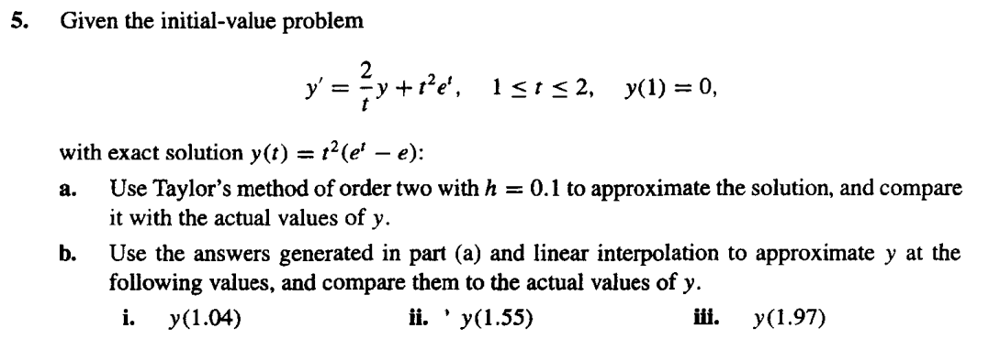
求 \(f(t,y(t))=\frac{2}{t}y(t)+t^2e^t\) 关于 \(t\) 的一阶导数
\[
\begin{aligned}
f(t,y(t))&=\frac2ty+t^2e^t\\
f'(t,y(t))&=\frac2ty'-\frac{2}{t^2}y+2te^t+t^2e^t\\
&=\frac{2}{t}(\frac{2}{t}y+t^2e^t)-\frac{2}{t^2}y+2te^t+t^2e^t\\
&=\frac{4}{t^2}y+2te^t-\frac{2}{t^2}y+2te^t+t^2e^t\\
&=\frac{2}{t^2}y+4te^t+t^2e^t
\end{aligned}
\]
\[
\begin{aligned}
T^{(2)}(t_i,w_i)&=f(t_i,w_i)+\frac{h}{2}f'(t_i,w_i)\\
&=\frac{2}{t_i}w_i+t_i^2e^{t_i}+\frac{h}{2}(\frac{2}{t_i^2}w_i+4t_ie^{t_i}+t_i^2e^{t_i})\\
\end{aligned}
\]
所以 \(w_{i+1}\) 的表达式为：
\[
\begin{aligned}
w_{i+1}&=w_i+hf(t_i,w_i)+\frac{h^2}{2}f'(t_i,w_i)\\
&=w_i+h(\frac{2}{t_i}w_i+t_i^2e^{t_i})+\frac{h^2}{2}(\frac{2}{t_i^2}w_i+4t_ie^{t_i}+t_i^2e^{t_i})\\
\end{aligned}
\]
\(h=0.1\) 时：
| \(i\) |
\(t_i\) |
\(w_i\) |
\(y(t_i)\) |
| 0 |
1.00 |
0.0000000 |
0.0000000 |
| 1 |
1.10 |
0.3397852 |
0.3459199 |
| 2 |
1.20 |
0.8521434 |
0.8666425 |
| 3 |
1.30 |
1.581770 |
1.607215 |
| 4 |
1.40 |
2.580997 |
2.620360 |
| 5 |
1.50 |
3.910985 |
3.967666 |
| 6 |
1.60 |
5.643081 |
5.720962 |
| 7 |
1.70 |
7.860382 |
7.963874 |
| 8 |
1.80 |
10.65951 |
10.79362 |
| 9 |
1.90 |
14.15268 |
14.32308 |
| 10 |
2.00 |
18.46999 |
18.68310 |
应用线性插值法，我们有
\[
\begin{aligned}
y(1.04)&\approx 0.6y(1.00)+0.4y(1.10)\\
&=0.6*0.0000000+0.4*0.3397852\\
&=0.1359141\\
y(1.55)&\approx 0.5y(1.50)+0.5y(1.60)\\
&=0.5*3.910985+0.5*5.643081\\
&=4.777033\\
y(1.97)&\approx 0.3y(1.90)+0.7y(2.00)\\
&=0.3*14.15268+0.7*18.46999\\
&=17.17480
\end{aligned}
\]
其精确值为：
\[
\begin{aligned}
y(1.04)&=0.1199875\\
y(1.55)&=4.788635\\
y(1.97)&=17.27930
\end{aligned}
\]
5.4 Runge-Kutta 法 | Runge-Kutta Methods
泰勒方法需要计算 \(f(t,y)\) 的导数并求值，这是一个复杂、耗时的过程。Runge-Kutta 方法具有 Taylor 方法的高阶局部截断误差，但是不需要计算 \(f(t,y)\) 的导数。
二阶 Runge-Kutta 法 | Runge-Kutta method of order 2
我们考察改进欧拉法 \(K\) 前面的系数以及 \(K_2\) 的步长，使局部截断误差为 \(O(h^2)\)：
\[
\begin{cases}w_{i+1}&=&w_i+h[{\color{red}{\lambda_1}}K_1+{\color{red}{\lambda_2}}K_2]\\K_1&=&f(t_i,w_i)\\K_2&=&f(t_i+{\color{red}{p}}h,w_i+{\color{red}{p}}hK_1)\end{cases}\]
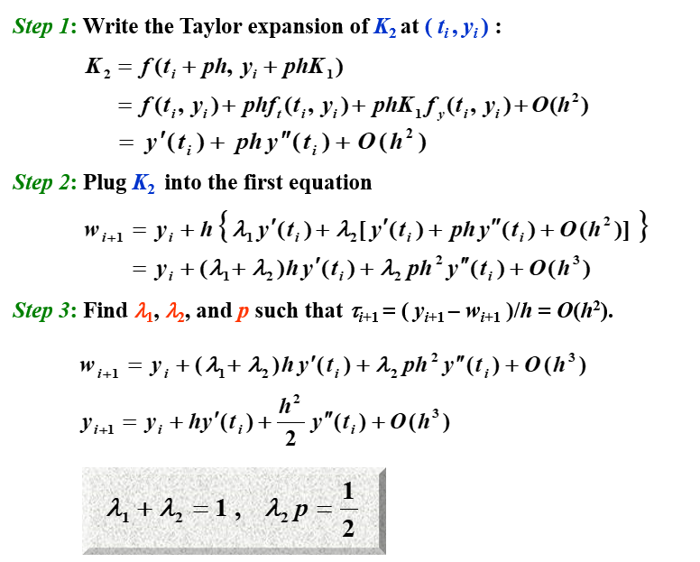
这有无穷多种可能，我们称其为 二阶 Runge-Kutta 方法（Runge-Kutta method of order 2）。
以下三个是二阶 Runge-Kutta 方法的特例
中点法 | Midpoint Method
\[\begin{cases}w_0=\alpha\\
w_{i+1}=w_i+hf(t_i+\frac{h}{2},w_i+\frac{h}{2}f(t_i,w_i))\end{cases}\]
改进欧拉法 | Modified Euler Method
\[\begin{cases}w_0=\alpha\\
w_{i+1}=w_i+h(\frac12K_1+\frac12K_2)\\
K_1=f(t_i,w_i)\\
K_2=f(t_{i}+h,w_i+hK_1)\end{cases}\]
是不是感觉和梯形法很像？
梯形法是用 \(f(t_i,w_i)\) 和 \(f(t_{i+1},w_{i+1})\) 的平均值来代替 \(f(t,y)\)，而改进欧拉法是用 \(f(t_i,w_i)\) 和 \(f(t_{i}+h,w_i+hK_1)\) 的平均值来代替 \(f(t,y)\)。区别在于前者是隐式的，后者是显式的。
Heun 法 | Heun's Method
\[\begin{cases}w_0=\alpha\\
w_{i+1}=w_i+h(\frac{1}{4}K_1+\frac{3}{4}K_2)\\
K_1=f(t_i,w_i)\\
K_2=f(t_{i}+\frac{2}{3}h,w_i+\frac{2}{3}hK_1)\end{cases}\]
高阶 Runge-Kutta 法 | Runge-Kutta methods of order \(m\)
\[\begin{cases}w_0=\alpha\\
w_{i+1}=w_i+h({\color{red}{\lambda_1}}K_1+{\color{red}{\lambda_2}}K_2+\cdots+{\color{red}{\lambda_m}}K_m)\\
K_1=f(t_i,w_i)\\
K_2=f(t_i+{\color{red}{\alpha_2}}h,w_i+{\color{red}{\beta_{21}}}hK_1)\\
K_3=f(t_i+{\color{red}{\alpha_3}}h,w_i+{\color{red}{\beta_{31}}}hK_1+{\color{red}{\beta_{32}}}hK_2)\\
\vdots\\
K_m=f(t_i+{\color{red}{\alpha_m}}h,w_i+{\color{red}{\beta_{m1}}}hK_1+{\color{red}{\beta_{m2}}}hK_2+\cdots+{\color{red}{\beta_{m,m-1}}}hK_{m-1})\end{cases}\]
Order 4-the most popular one
\[\begin{cases}w_0=\alpha\\
w_{i+1}=w_i+h(\frac16K_1+\frac13K_2+\frac13K_3+\frac16K_4)\\
K_1=f(t_i,w_i)\\
K_2=f(t_i+\frac{h}{2},w_i+\frac{h}{2}K_1)\\
K_3=f(t_i+\frac{h}{2},w_i+\frac{h}{2}K_2)\\
K_4=f(t_i+h,w_i+hK_3)\end{cases}\]
我们给出每步的求值次数和局部阶段误差的阶之间的关系：
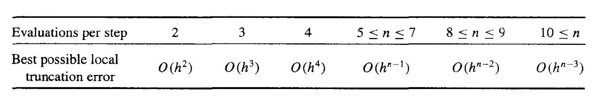
这说明了为什么人们更喜欢使用具有较小步长的小于 5 阶的 Runge-Kutta 方法。
因为 Runge-Kutta 方法是基于 Taylor 展开的，所以 y 必须足够平滑，才能获得更高阶方法的更高精度。通常情况下，人们更喜欢使用较小步长的低阶方法，而不是使用较大步长的高阶方法。
如果 \(y\) 不够光滑，那么高阶的 Runge-Kutta 方法也不会有很好的效果，所以一般会用低阶的 Runge-Kutta 方法，但是步长会更小
5.6 多步法 | Multistep Methods
在一些网格点（mesh points）上使用 \(y\) 和 \(y'\) 的线性组合来更好地近似 \(y(t_{i+1})\)
求解初值问题
\[y'=f(t,y),\quad a\leq t\leq b,\quad y(a)=\alpha\]
的 \(m\) 步多步法（\(m\)-step multistep method）的一般形式为
\[\begin{aligned}
w_{i+1}=&{\color{red}{a_{m-1}}}w_i+{\color{red}{a_{m-2}}}w_{i-1}+...+{\color{red}{a_0}}w_{i+1-m}\\+&h[{\color{red}{b_m}}f(t_{i+1},w_{i+1})+{\color{red}{b_{m-1}}}f(t_i,w_i)+...+{\color{red}{b_0}}f(t_{i+1-m},w_{i+1-m})]
\end{aligned}\]
其中 \(h=(b-a)/N\)，给定 \(m\) 个初始值 \(w_0,w_1,...,w_{m-1}\)，\(a_0,a_1,...,a_{m-1}\) 和 \(b_0,b_1,...,b_m\) 是常数。
\(b_m=0\) 的方法称为显式（explicit）；\(b_m\neq 0\) 的方法称为隐式（implicit）
局部截断误差（local truncation error）为
\[
\begin{aligned}
\tau_{i+1}(h)&=\frac{y_{i+1}-w_{i+1}}{h}\\
&=\frac{y_{i+1}-{\color{red}{a_{m-1}}}y_i-{\color{red}{a_{m-2}}}y_{i-1}-...-{\color{red}{a_0}}y_{i+1-m}}{h}\\
&-{\color{red}{b_m}}f(t_{i+1},y_{i+1})-{\color{red}{b_{m-1}}}f(t_i,y_i)-...-{\color{red}{b_0}}f(t_{i+1-m},y_{i+1-m})
\end{aligned}
\]
Adams-Bashforth 显式 m 步方法 | Adams-Bashforth explicit m-step technique
注意到
\[y(t_{i+1})=y(t_i)+\int_{t_i}^{t_{i+1}}f(t,y(t))dt\]
为了推导 Adams-Bashforth 显式 m 步方法，我们通过\((t_i,f(t_i,y(t_i)))\)，\((t_{i-1},f(t_{i-1},y(t_{i-1})))\)，\((t_{i-2},f(t_{i-2},y(t_{i-2})))\)，...，\((t_{i+1-m},f(t_{i+1-m},y(t_{i+1-m})))\) 形成向后差分多项式 \(P_{m-1}(t)\)，然后用 \(P_{m-1}(t)\) 来代替 \(f(t,y(t))\)，从而得到
\[f(t,y(t))=P_{m-1}(t)+\frac{f^{(m)}(\xi_i,y(\xi_i))}{m!}(t-t_i)(t-t_{i-1})...(t-t_{i+1-m})\]
向后差分多项式
\[P_n(x_s)=\sum\limits_{k=0}^n(-1)^k\begin{pmatrix}-s\\k\end{pmatrix}\nabla^kf(x_n)\]
\[\begin{aligned}
\int_{t_i}^{t_{i+1}}f(t,y(t))dt&=\int_{t_i}^{t_{i+1}}P_{m-1}(t)dt+\int_{t_i}^{t_{i+1}}R_{m-1}(t)dt\\
&=h\int_{0}^{1}P_{m-1}(t_i+sh)ds+h\int_{0}^{1}R_{m-1}(t_i+sh)ds\\
&=h\sum\limits_{k=0}^{m-1}\nabla^kf(t_i,y(t_i))(-1)^k\int_{0}^{1}\begin{pmatrix}-s\\k\end{pmatrix}ds\\&+\frac{h^{m+1}}{m!}\int_{0}^{1}f^{(m)}(\xi_i,y(\xi_i))s(s+1)...(s+m-1)ds\\
\end{aligned}\]
其中 \(R_{m-1}(t)\) 是余项，也就是截断误差。
我们有
\[
\begin{aligned}
w_{i+1}&=w_i+h\int_{0}^{1}P_{m-1}(t_i+sh)ds\\
&=w_i+h\sum\limits_{k=0}^{m-1}\nabla^kf(t_i,y(t_i))(-1)^k\int_{0}^{1}\begin{pmatrix}-s\\k\end{pmatrix}ds\\
\int_{t_i}^{t_{i+1}}R_{m-1}(t)dt&=\frac{h^{m+1}}{m!}\int_{0}^{1}f^{(m)}(\xi_i,y(\xi_i))s(s+1)...(s+m-1)ds\\
&=\frac{h^{m+1}f^{(m)}(\mu_i,y(\mu_i))}{m!}\int_{0}^{1}s(s+1)...(s+m-1)ds\\
&={h^{m+1}f^{(m)}(\mu_i,y(\mu_i))}(-1)^m\int_{0}^{1}\begin{pmatrix}-s\\m\end{pmatrix}ds\\
\end{aligned}
\]
其局部截断误差为
\[
\begin{aligned}
\tau_{i+1}(h)&=\frac{y_{i+1}-{\color{red}{a_{m-1}}}y_i-{\color{red}{a_{m-2}}}y_{i-1}-...-{\color{red}{a_0}}y_{i+1-m}}{h}\\
&-{\color{red}{b_m}}f(t_{i+1},y_{i+1})-{\color{red}{b_{m-1}}}f(t_i,y_i)-...-{\color{red}{b_0}}f(t_{i+1-m},y_{i+1-m})\\
&=\frac{1}{h}\int_{t_i}^{t_{i+1}}R_{m-1}(t)dt\\
&={h^{m}f^{(m)}(\mu_i,y(\mu_i))}(-1)^m\int_{0}^{1}\begin{pmatrix}-s\\m\end{pmatrix}ds
\end{aligned}
\]
\((-1)^k\int_{0}^{1}\begin{pmatrix}-s\\k\end{pmatrix}ds\)
| \(k\) |
\((-1)^k\int_{0}^{1}\begin{pmatrix}-s\\k\end{pmatrix}ds\) |
| \(0\) |
\(1\) |
| \(1\) |
\(\frac{1}{2}\) |
| \(2\) |
\(\frac{5}{12}\) |
| \(3\) |
\(\frac{3}{8}\) |
| \(4\) |
\(\frac{251}{720}\) |
| \(5\) |
\(\frac{95}{288}\) |
2步
取 \(m=2\)，我们有
\[
\begin{aligned}
w_{i+1}&=w_i+h[\nabla^0f(t_i,w_i)+\frac12\nabla^1f(t_i,w_i)]\\
&=w_i+h[\frac32f(t_i,w_i)-\frac12f(t_{i-1},w_{i-1})]\\
\end{aligned}
\]
因为 \(y_{i+1}=y_i+h[{\color{red}{b_m}}f(t_{i+1},w_{i+1})+{\color{red}{b_{m-1}}}f(t_i,w_i)+...+{\color{red}{b_0}}f(t_{i+1-m},w_{i+1-m})]+\int_{t_i}^{t_{i+1}}R_{m-1}(t)dt\)，所以
其局部截断误差为
\[
\begin{aligned}
\tau_{i+1}(h)&={h^{m}f^{(m)}(\mu_i,y(\mu_i))}(-1)^m\int_{0}^{1}\begin{pmatrix}-s\\m\end{pmatrix}ds\\
&=\frac{5}{12}h^2f''(\mu_i,y(\mu_i))\\
&=\frac{5}{12}h^2y'''(\mu_i)
\end{aligned}
\]
| \(m\) |
\(f_i\) |
\(f_{i-1}\) |
\(f_{i-2}\) |
\(f_{i-3}\) |
| \(1\) |
\(1\) |
\(-\) |
\(-\) |
\(-\) |
| \(2\) |
\(\frac{3}{2}\) |
\(-\frac{1}{2}\) |
\(-\) |
\(-\) |
| \(3\) |
\(\frac{23}{12}\) |
\(-\frac{4}{3}\) |
\(\frac{5}{12}\) |
\(-\) |
| \(4\) |
\(\frac{55}{24}\) |
\(-\frac{59}{24}\) |
\(\frac{37}{24}\) |
\(-\frac{3}{8}\) |
查表可得，Adams-Bashforth 显式 4 步方法的为
\[w_{i+1}=w_i+\frac{h}{24}(55f_i-59f_{i-1}+37f_{i-2}-9f_{i-3})\]
Adams-Moulton 隐式 m 步方法 | Adams-Moulton implicit m-step technique
同样的，我们采用向前差分多项式，可以得到 Adams-Moulton 隐式 m 步方法：
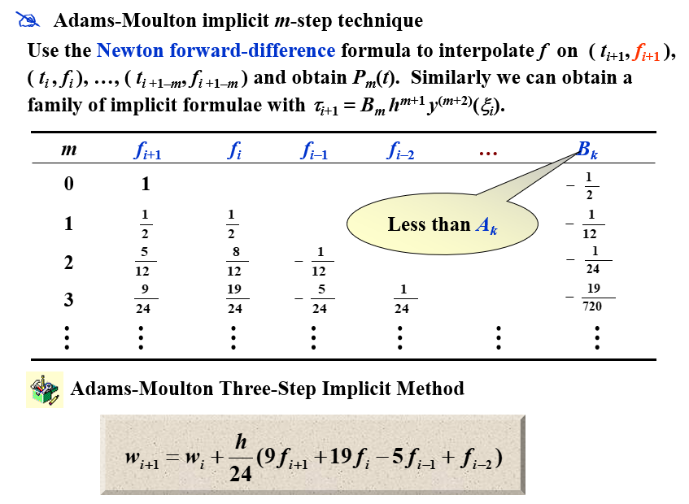
Adams 预测-校正系统 | Adams predictor-corrector system
Adams 预测-校正系统是 Adams-Bashforth 显式 m 步方法和 Adams-Moulton 隐式 m 步方法的结合：
- 用 Runge-Kutta 法计算出 \(m\) 个初始值 \(w_0,w_1,...,w_{m-1}\) （如果初值的个数不够）
- 预测：用 Adams-Bashforth 显式 m 步方法计算出 \(w_m,w_{m+1},...\) 直到 \(w_{N-1}\)
- 校正：用 Adams-Moulton 隐式 m 步方法计算出 \(w_m,w_{m+1},...\) 直到 \(w_{N-1}\)
在这三步中使用的所有公式的局部截断误差的阶必须相同。
最常用的系统是以 4 阶 Adams-Bashforth 方法作为预测器，以 Adams-Moulton 方法的一次迭代作为校正器，其起始值来自 4 阶 Runge-Kutta 方法。
宏观角度：Taylor 展开
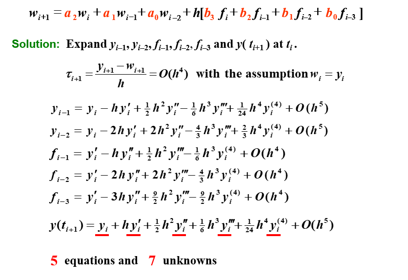
通过对比系数，可以有一族解。
通过对这个解的再限制（添加两个条件），我们可以得到多种方法。
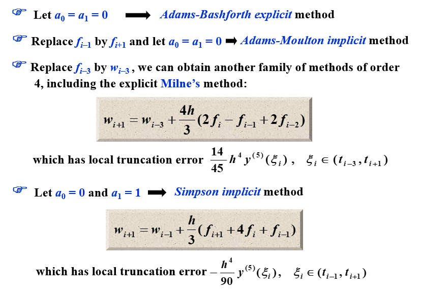
5.9 高阶方程和微分方程组 | Higher-Order Equations and Systems of Differential Equations
微分方程组的矩阵形式
对 \(m\) 阶微分方程组：
\[\begin{cases}
u_1'(t)=f_1(t,u_1(t),u_2(t),...,u_m(t))\\
\vdots\\
u_m'(t)=f_m(t,u_1(t),u_2(t),...,u_m(t))\\
\end{cases}\]
给定 \(m\) 个初始值 \(u_1(a),u_2(a),...,u_m(a)\)，我们可以用 \(m\) 步的 Runge-Kutta 法来求解。
用矩阵的形式可以记作
\[\begin{cases}
\mathbf{y}'(t)=\mathbf{f}(t,\mathbf{y}(t))\\
\mathbf{y}(a)=\mathbf{\alpha}\\
\end{cases}\]
高阶微分方程的转化
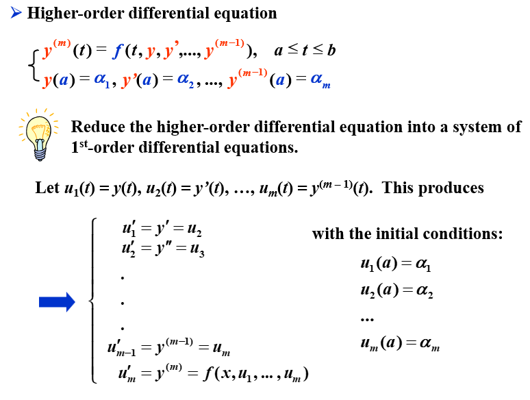
例题
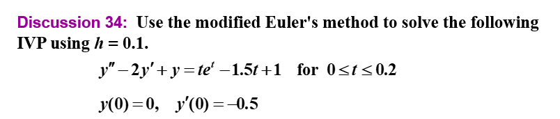
modified Euler's method
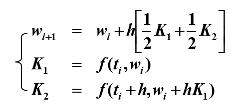
5.10 稳定性 | Stability
相容 | Consistency
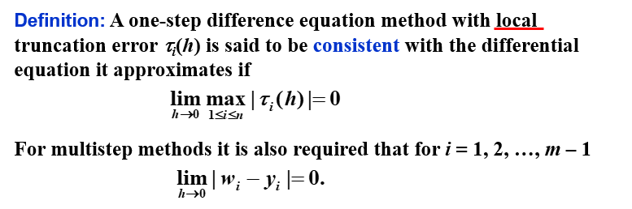
收敛 | Convergence
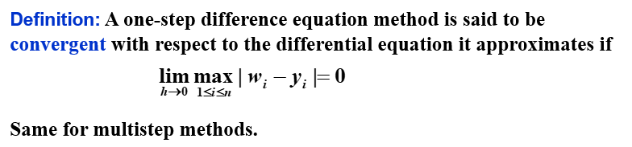
稳定性 | Stability
除了这两个概念，我们还需要一个概念：稳定性。如果初始条件的小变化或扰动会导致后续近似值的相应小变化，则该方法被称为稳定。
特征方程与稳定性
已知方程
\[\begin{aligned}
w_0&=\alpha,w_1=\alpha_1,\cdots,w_{m-1}=\alpha_{m-1}\\
w_{i+1}&=a_{m-1}w_i+a_{m-2}w_{i-1}+\cdots+a_0w_{i+1-m}+hF(t_i,h,w_{i+1},w_i,\cdots,w_{i+1-m})
\end{aligned}\]
我们给出一个相关的多项式，称为特征多项式（characteristic polynomial）：
\[P(\lambda)=\lambda^m-a_{m-1}\lambda^{m-1}-a_{m-2}\lambda^{m-2}-\cdots-a_0\]
- 如果 \(P(\lambda)\) 的所有根的模都小于等于 1，且取等时为单根，则称该方法满足根条件（root condition）
- 如果有且仅有一个根的模等于 1，则该方法是强稳定（strongly stable）的
- 如果有多个根的模等于 1，则该方法是弱稳定（weakly stable）的
- 如果方法不满足根条件，则该方法是不稳定的
测试方程 | Test Equation
我们将一个特定的方法应用于一个简单的测试方程：
\[y’ = \lambda y, y(0) = \alpha, \text{where } Re(\lambda) < 0\]
假设舍入误差只在初始点引入。如果这个初始误差会在某个步长 \(h\) 下减小，那么这个方法就被称为绝对稳定（absolutely stable），此时 \(H = \lambda h\)。所有这样的 \(H\) 的集合构成了绝对稳定域（region of absolute stability）。
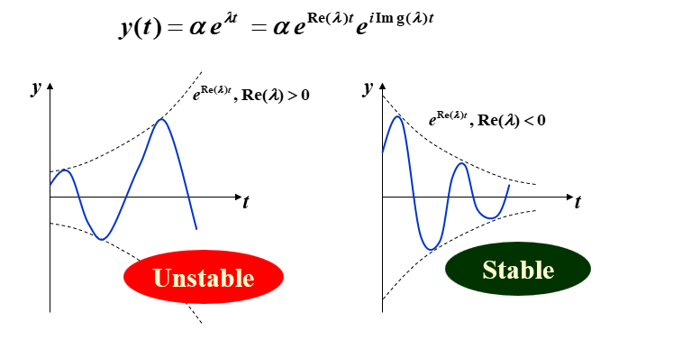
如果方法 A 的绝对稳定域比方法 B 的大，那么方法 A 就比方法 B 更稳定
显式 Euler 法的稳定性
在显式 Euler 法中，我们有
\[w_{i+1}=w_i+hf(t_i,w_i)\]
在这个测试方程中，我们有
\[w_{i+1}=(1+\lambda h)w_i=(1+H)w_i=(1+H)^{i+1}\alpha\]
我们给初值加上一个扰动项 \(\epsilon\)，即 \(\alpha^*=\alpha+\epsilon\)，则
\[w_{i+1}^*=(1+H)^{i+1}(\alpha+\epsilon)\]
所以
\[\epsilon_{i+1}=(1+H)^{i+1}\epsilon\]
要确保稳定性，我们需要 \(|(1+H)^{i+1}|<1\)，即 \(|1+H|<1\)。
隐式 Euler 法的稳定性
在隐式 Euler 法中，我们有
\[w_{i+1}=w_i+hf(t_{i+1},w_{i+1})\]
在这个测试方程中，我们有
\[w_{i+1}=w_i+h\lambda w_{i+1}\]
所以
\[w_{i+1}=\frac{1}{1-h\lambda}w_i=\frac{1}{1-H}w_i=(\frac{1}{1-H})^{i+1}\alpha\]
我们给初值加上一个扰动项 \(\epsilon\)，即 \(\alpha^*=\alpha+\epsilon\)，则
\[w_{i+1}^*=(\frac{1}{1-H})^{i+1}(\alpha+\epsilon)\]
所以
\[\epsilon_{i+1}=(\frac{1}{1-H})^{i+1}\epsilon\]
要确保稳定性，我们需要 \(|(\frac{1}{1-H})^{i+1}|<1\)，即 \(|\frac{1}{1-H}|<1\)。
二阶 隐式 Runge-Kutta 法的稳定性
在二阶 隐式 Runge-Kutta 法中，我们有
\[
\begin{cases}w_{i+1}&=&w_i+hK_1\\K_1&=&f(t_i+\frac12h,w_i+\frac12hK_1)\end{cases}
\]
在这个测试方程中，我们有
\[
\begin{aligned}
K_1&=\lambda (w_i+\frac12hK_1)\Rightarrow K_1=\frac{\lambda w_i}{1-\frac12h\lambda}\\
w_{i+1}&=w_i+hK_1\\
&=w_i+h\frac{\lambda w_i}{1-\frac12h\lambda}\\
&=w_i+\frac{H w_i}{1-\frac12H}\\
&=\frac{2+H}{2-H}w_i\\
&=(\frac{2+H}{2-H})^{i+1}\alpha\\
\end{aligned}
\]
我们给初值加上一个扰动项 \(\epsilon\)，即 \(\alpha^*=\alpha+\epsilon\)，则
\[w_{i+1}^*=(\frac{2+H}{2-H})^{i+1}(\alpha+\epsilon)\]
所以
\[\epsilon_{i+1}=(\frac{2+H}{2-H})^{i+1}\epsilon\]
要确保稳定性，我们需要 \(|\frac{2+H}{2-H}|<1\)。
四阶 显式 Runge-Kutta 法的稳定性
在四阶 显式 Runge-Kutta 法中，我们有
\[
\begin{cases}w_{i+1}&=&w_i+\frac{h}{6}(K_1+2K_2+2K_3+K_4)\\
K_1&=&f(t_i,w_i)\\
K_2&=&f(t_i+\frac12h,w_i+\frac12hK_1)\\
K_3&=&f(t_i+\frac12h,w_i+\frac12hK_2)\\
K_4&=&f(t_i+h,w_i+hK_3)\\
\end{cases}
\]
在这个测试方程中，我们有
\[
\begin{aligned}
K_1&=\lambda w_i\\
K_2&=\lambda (w_i+\frac12hK_1)=\lambda w_i(1+\frac12H )\\
K_3&=\lambda (w_i+\frac12hK_2)=\lambda w_i(1+\frac12H +\frac14H^2 )\\
K_4&=\lambda (w_i+hK_3)=\lambda w_i(1+H +\frac12H^2 +\frac14H^3 )\\
w_{i+1}&=w_i+\frac{h}{6}(K_1+2K_2+2K_3+K_4)\\
&=w_i+\frac{h}{6} \lambda w_i(1+2(1+\frac12H )+2(1+\frac12H +\frac14H^2 )+(1+H +\frac12H^2 +\frac14H^3 ))\\
&=w_i+\frac{H}{6} w_i(6+3H+H^2+\frac{1}{4}H^3)\\
&=w_i(1+H+\frac{1}{2}H^2+\frac{1}{6}H^3+\frac{1}{24}H^4)\\
&=\alpha(1+H+\frac{1}{2}H^2+\frac{1}{6}H^3+\frac{1}{24}H^4)^{i+1}\\
\end{aligned}
\]
我们给初值加上一个扰动项 \(\epsilon\)，即 \(\alpha^*=\alpha+\epsilon\)，则
\[w_{i+1}^*=\alpha^*(1+H+\frac{1}{2}H^2+\frac{1}{6}H^3+\frac{1}{24}H^4)^{i+1}\]
所以
\[\epsilon_{i+1}=(1+H+\frac{1}{2}H^2+\frac{1}{6}H^3+\frac{1}{24}H^4)^{i+1}\epsilon\]
要确保稳定性，我们需要 \(|1+H+\frac{1}{2}H^2+\frac{1}{6}H^3+\frac{1}{24}H^4|<1\)。
微分方程组
考虑一个微分方程组
\[\begin{cases}u_1^{\prime}&=9u_1+24u_2+5\cos t-\frac13\sin t,&u_1(0)&=\frac43\\\\u_2^{\prime}&=-24u_1-51u_2-9\cos t+\frac13\sin t,&u_2(0)&=\frac23\end{cases}
\]
应用欧拉显式法，我们该如何选择步长 \(h\) 才能保证稳定性？
我们将条件改写为矩阵形式：
\[
\begin{pmatrix}u_1^{\prime}\\u_2^{\prime}\end{pmatrix}=\begin{pmatrix}9&24\\-24&-51\end{pmatrix}\begin{pmatrix}u_1\\u_2\end{pmatrix}+\begin{pmatrix}5\cos t-\frac13\sin t\\-9\cos t+\frac13\sin t\end{pmatrix}
\]
应用欧拉显式法，我们有
\[
\begin{pmatrix}u_1^{i+1}\\u_2^{i+1}\end{pmatrix}=\begin{pmatrix}u_1^i\\u_2^i\end{pmatrix}+h\begin{pmatrix}9&24\\-24&-51\end{pmatrix}\begin{pmatrix}u_1^i\\u_2^i\end{pmatrix}+h\begin{pmatrix}5\cos t_i-\frac13\sin t_i\\-9\cos t_i+\frac13\sin t_i\end{pmatrix}
\]
记 \(\mathbf{A}=\begin{pmatrix}9&24\\-24&-51\end{pmatrix}\)，则
\[
\begin{pmatrix}u_1^{i+1}\\u_2^{i+1}\end{pmatrix}=(\mathbf{I}+h\mathbf{A})\begin{pmatrix}u_1^i\\u_2^i\end{pmatrix}+h\begin{pmatrix}5\cos t_i-\frac13\sin t_i\\-9\cos t_i+\frac13\sin t_i\end{pmatrix}
\]
我们给初值加上一个扰动项 \(\epsilon_0\) 和 \(\mu_0\)，即 \(\mathbf{u}^*_0=\mathbf{u}_0+\begin{pmatrix}\epsilon_0\\\mu_0\end{pmatrix}\)，则
\[
\begin{pmatrix}u_1^{i+1*}\\u_2^{i+1*}\end{pmatrix}=(\mathbf{I}+h\mathbf{A})\begin{pmatrix}u_1^{i*}\\u_2^{i*}\end{pmatrix}+h\begin{pmatrix}5\cos t_i-\frac13\sin t_i\\-9\cos t_i+\frac13\sin t_i\end{pmatrix}
\]
上面两个式子相减，我们有
\[
\begin{pmatrix}\epsilon_{i+1}\\\mu_{i+1}\end{pmatrix}=(\mathbf{I}+h\mathbf{A})\begin{pmatrix}\epsilon_i\\\mu_i\end{pmatrix}
\]
所以
\[
\begin{pmatrix}\epsilon_{i+1}\\\mu_{i+1}\end{pmatrix}=(\mathbf{I}+h\mathbf{A})^{i+1}\begin{pmatrix}\epsilon_0\\\mu_0\end{pmatrix}
\]
要确保稳定性，我们需要 \(|(\mathbf{I}+h\mathbf{A})^{i+1}|<1\)。
也就是说，我们需要 \(|1+h\lambda|<1\Leftrightarrow -2<h\lambda<0\)，其中 \(\lambda\) 是 \(\mathbf{A}\) 的特征值。
我们求解 \(\mathbf{A}\) 的特征值，得到 \(\lambda_1=-3\) 和 \(\lambda_2=-39\)。
所以，我们需要 \(-2<h\lambda_1<0\Leftrightarrow \frac23>h>0\) 和 \(-2<h\lambda_2<0\Leftrightarrow \frac{2}{39}>h>0\)。
所以，我们需要 \(0<h<\frac{2}{39}\)。